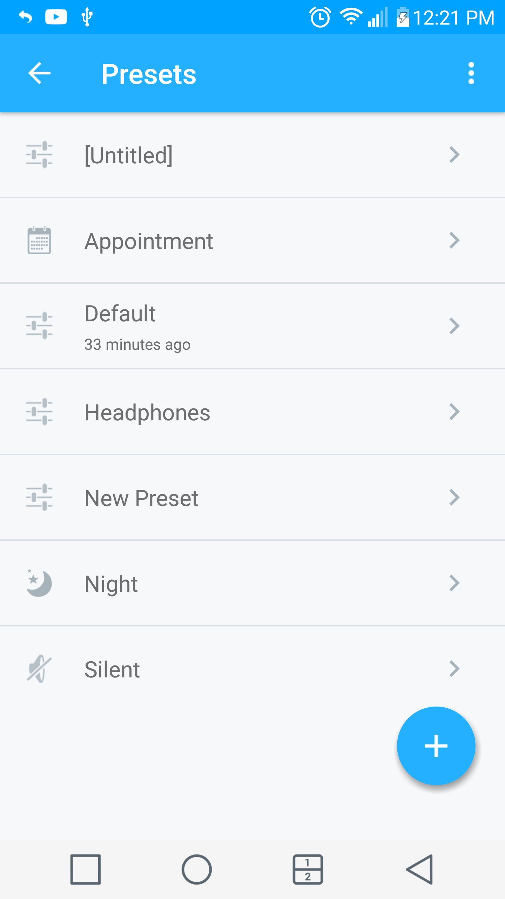
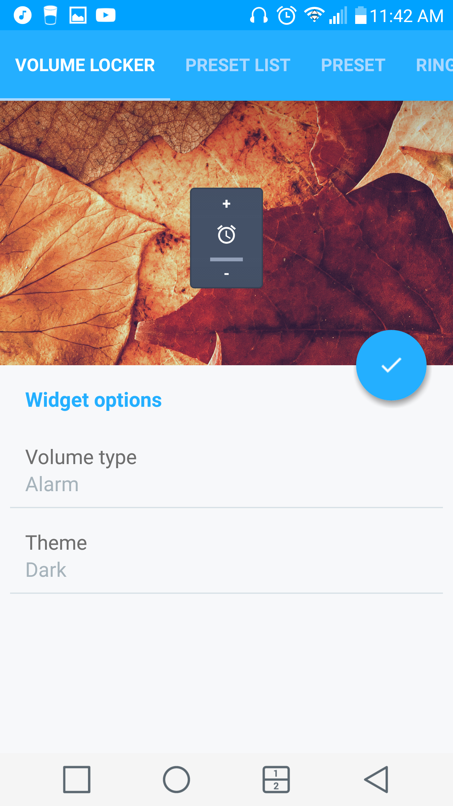

用 Persist 把安卓音量调度做成一条自动流水线
以前每天在通勤、会议、健身房、睡前四五个场景之间手动调音量，一周下来少说三十次。换成 Persist 之后，预设、排程、蓝牙触发三者串成一条链，大部分场景切换不用碰手机。
我每天要在五六个场景之间来回切音量：早上通勤地铁上媒体要拉到中高、进公司改成会议静音、中午吃饭恢复正常响铃、下午可能又要开个短会、下班后健身房媒体顶起来、睡前一键静音但闹钟得留着。以前这条链全靠手动——下拉通知栏拖滑块、按音量键加方向键，一天少说调十几次，还经常忘。
忘调的代价挺具体的：地铁上媒体没拉够听不清播客、开会前忘了静音被微信提醒炸场、睡前静音设了但闹钟跟着被关第二天差点迟到。这些不是什么大事故，但每周总会出一两次，烦得很。
旧流程到底卡在哪
以前我用的是系统自带的音量面板加一个 Tasker 触发：
- 手动拖音量条切场景
- Tasker 设了两个时间点（早 9 点静音、晚 11 点静音）
- 蓝牙连上耳机时用 Tasker 加了一条自动拉高媒体
这套东西跑了大半年，问题越来越明显。系统音量条是"一次一个动作"——按一下、拖一下、瞬间生效，没有记忆也没有守卫。我在会议前手动调成静音，中途去接了个电话挂掉，系统自动把响铃拉回之前的档位，回来坐下没注意，十分钟后一条推送炸了全场。
Tasker 解决了一部分自动切换的问题，但它做不了的事更多：音量被其他应用改了它拦不住、系统层面绑死的响铃通知三合一它拆不开、预设存了之后找不到统一管理的地方。更麻烦的是，Tasker 的配置是 XML 式的 JSON，每次改一个档位要翻三四个面板，改完还得手动触发一次看效果，调试成本太高。
后来去 Persist文档 翻了一下才弄明白，它把音量调度拆成了三件独立的事——预设存储、自动触发、防篡改守卫——每一件都单独做好，然后能互相串联。这三件事之前系统和 Tasker 各自做了一半，但没有一个把它们拼起来。
新流程怎么搭
现在我的音量流水线是这样跑的：早上 7:30 排程自动切到通勤预设（媒体 70%、响铃 30%、通知 20%），到公司蓝牙连上车载导航自动切车载预设（蓝牙 80%、媒体 50%、响铃 10%），进会议室手动点一下桌面小组件切会议预设（响铃 0、振动开、通知 10%），晚上 11 点排程自动切夜晚预设（响铃 0、通知 0、媒体 10%，闹钟锁在 80% 不让任何东西改）。
整条链的核心是预设——我现在一共存了七个：Default、通勤、会议、夜晚、车载、健身房、在家。每个预设就是七条滑条各自的档位，存的时候给它起场景词名字、配个图标，下拉通知栏的小组件里一排扫过去，知道切哪个。

但预设只是"存状态"，真正让流水线跑起来的是触发条件。Persist官网 能挂的触发源挺全的：时间排程、日历事件、蓝牙连接、Wi-Fi、耳机插拔、甚至屏幕灭屏。我主要用三个：
排程触发是主力。早上通勤预设和晚上夜晚预设都是时间到了自动切。排程支持重复——工作日每天同一时间触发，周末单独设晚半小时。排程里还能加"前置条件"——比如夜晚预设只在屏幕灭屏后才锁闹钟，白天手动切到夜晚预设不会把闹钟锁死，免得我下午想午睡一会儿结果闹钟也被静音了。
蓝牙触发解决车载场景。连上车载蓝牙就切车载预设，断开就自动回 Default。这个触发比我之前用 Tasker 写的靠谱多了——Tasker 要监听蓝牙连接事件然后匹配设备名，逻辑写复杂了容易漏触发，Persist 里就是在预设编辑页选"蓝牙设备"然后挑车载那条，完事。
手动触发留给会议和健身房。这俩场景没有明确的时间或设备信号，放桌面一个 1×1 小组件，点一下切一个预设。小组件不占地方，放在主屏幕最下面一排，开会前掏出来按一下就行。

防篡改是这条链不崩的关键
之前用 Tasker 最头疼的就是"改了又被改回去"。我手动设好的静音，某个视频 App 一打开把媒体音量顶到满；我把通知音量拉低，系统响铃跟着一起动；我睡前调的闹钟，被某个清理类 App 的"音量优化"关了。这些问题如果不解决，预设存得再精细也是白搭。
Persist 用了三道闸——装好之后先把这三样开起来，安装包从 官方下载 拿。具体是音量锁、音量上限、分开响铃和通知。
音量锁最直接——每条音量滑条左侧有个锁图标，点一下就锁住。锁住之后任何应用想改这条音量，Persist 会弹回锁定档位。我给夜晚预设的闹钟音量加了锁——之前一周被闹钟坑过一次，现在再也不怕。系统级别的音量键也会被拦住，灭屏后按音量键，锁住的通道纹丝不动。
音量上限是另一层保险——媒体通道设 70% 上限，任何视频游戏导航 App 再怎么拉也超不过这个数。之前在公交上开了个短视频，媒体直接顶满全车人看我，这个上限就是专门治那个的。
分开响铃和通知是补丁——多数新机型出厂把响铃、系统、通知合成一条滑块，你拖其中一条其他两条同步动。Persist 的这个选项会在来电时临时拉响铃、挂机后回原样，绕开了系统的绑定限制。能否生效取决于机型，我用的这款能用，少数机型在系统层绑死就只能放弃。
这三道闸加起来，音量从"随时可能被改"变成了"只有我允许的触发条件能改"。
两个容易断链的环节
流水线搭起来之后有两个地方出过问题，折腾了一阵才跑稳。
第一个是口袋里误触。音量锁能拦住应用改音量，但口袋里按到物理音量键——如果那条音量没锁死，还是会变。解决办法是开口袋锁：灭屏后 Persist 接管音量按键，按了也不动；亮屏后恢复正常。这个选项默认不开，得进设置里手动打开。
第二个是预设被覆盖。一开始我以为预设存了就永远在那，结果有次调整 Default 预设时手滑点了保存，把之前的 Default 覆盖了——通勤预设里引用的基准值跟着变了。后来学会了：改预设之前先复制一份出来调，调好确认没问题再删旧的。Persist 的预设编辑页支持复制，长按预设项就能看到菜单。
效果和边界
跑了一个月，手动调音量的次数从每天十几次降到了每天两三句——基本只剩会议和健身房这两个需要手动切的场景。之前每周总会出一次"忘调音量出事"的小意外，这一个月零次。
但这套流程也不是万能的。我试过用日历事件触发会议预设，但 Outlook 日历的权限给了之后又被系统回收了两次，最后还是放弃改成手动小组件。另外 VIP 联系人白名单我也没用上——Persist 支持"来电时临时拉高响铃"，但我经常开会时忘了设，用小组件手动切反而更可控。
还有一件事值得提：Persist 是免费的，但 Pro 版有一些进阶功能比如预设导入导出、更多触发条件、VIP 联系人白名单。我现在用免费版，七个预设加排程加蓝牙触发已经够用，暂时没打算升。如果以后预设数量超过免费版上限或者需要跨设备同步，再考虑。
总的来说，Persist 把安卓音量这件事从"每次手动救火"变成了"一次搭好自动跑"。它不是一个单独的 App，而是一条把预设、触发、守卫三个环节串起来的流水线。如果你也在不同场景间反复切音量，别再手动拖了——花半小时把这条链接起来，剩下的事让手机自己干。预设命名表和排程参考整理在了 GitHub 仓库，国内用户直接访问 Gitee 或 GitCode 也能看到同样的内容。